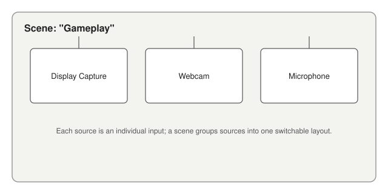

Scenes and Sources
Everything you record or stream in OBS Studio is built from scenes and sources.
A scene is a layout you switch to as a single unit — for example, a "Starting Soon" scene, a "Gameplay" scene, and a "Webcam Only" scene. Each scene is made up of one or more sources: individual inputs such as a display capture, a webcam, a microphone, an image, or a browser page.

You can reuse the same source across multiple scenes, resize and reposition sources independently within a scene, and switch between scenes instantly while recording or streaming — this is what makes multi-camera or multi-layout setups possible without stopping the recording.
Before building your first scene, see Installing OBS Studio. Once installed, see Creating Your First Scene.